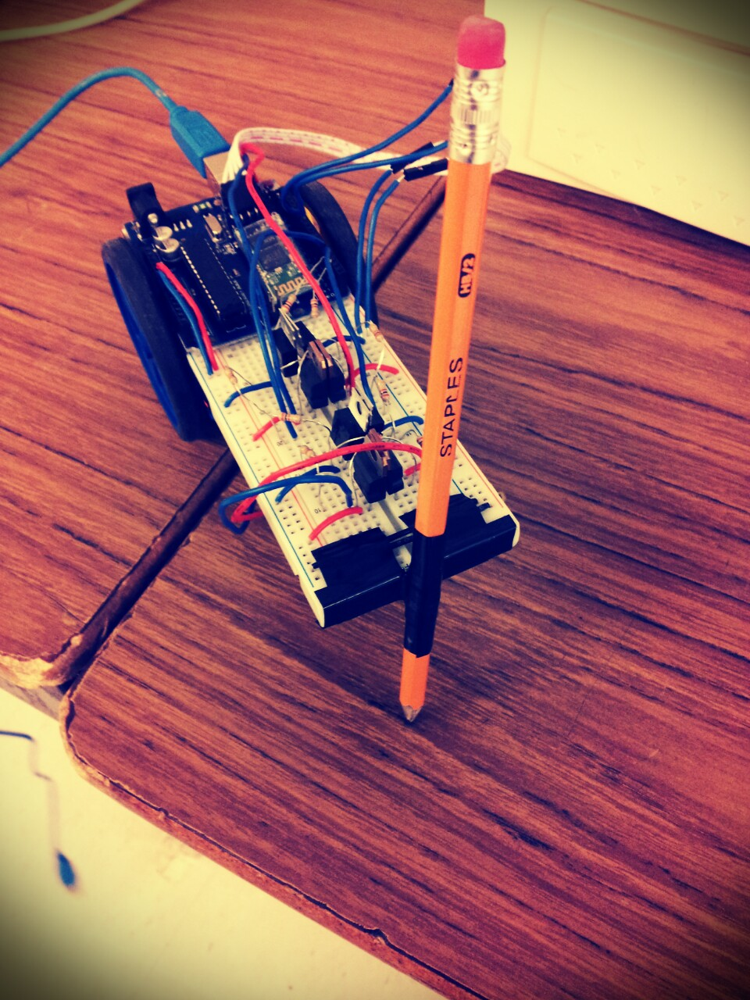

Purpose
The purpose of this lab was to construct DNA robot that takes DNA sequence as input and translating it into movements. These movements are recorded with a pencil attached to trace the movements. The letter A will result in a forward movement, T will provide a backwards movement, G provides a left motion, and C provides a right motion. A normal chromosome's diagram can be compated to a mutated one to differentiate the mutations and how it's different.
